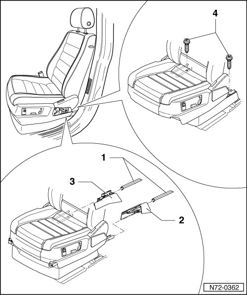
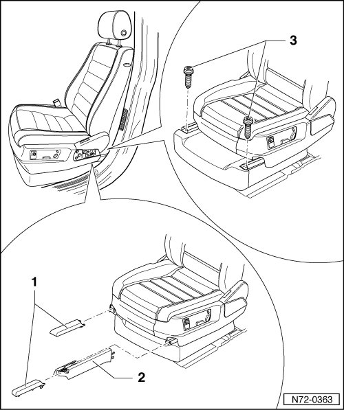
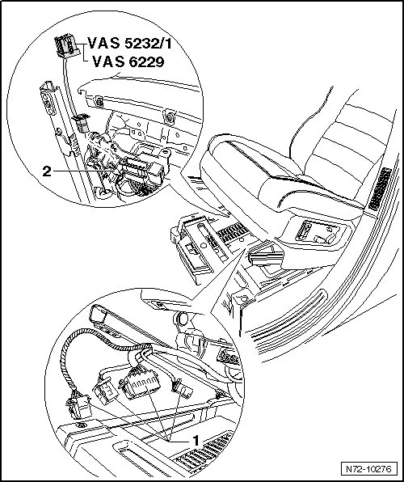

Front Seat
Front Seats
Front Seat
• Removal and installation is described for the left-hand side of the vehicle. Removal and installation for the right-hand side is performed in the same manner.
Removing
CAUTION!
Observe safety precautions for working on airbags --> [ Airbag Safety Precautions ] Technician Safety Information.
- Position seat into the front-most position via the fore/aft adjustment.
- Remove belt anchor --> [ Belt Anchor ] Belt Anchor.
- Remove covers from both spindles - 1 - --> [ Seat Rail Covers ]. Seat Rail Covers
- Remove caps - 2 - and - 3 - from both seat rails --> [ Seat Rail Covers ]. Seat Rail Covers
- Remove bolts - 4 - (45 Nm) from both seat rails.
• The bolts are microencapsulated and must therefore be replaced after every removal.
• Before installing the new bolts, the threads of the corresponding nuts must be cleaned.

- Position seat as far back as possible using fore/aft adjustment.
- Remove covers from both spindles - 1 - --> [ Seat Rail Covers ]. Seat Rail Covers
- Remove covers - 2 - from the outer seat rail --> [ Seat Rail Covers ]. Seat Rail Covers
- Remove bolts - 3 - (45 Nm) from both seat rails.
• The bolts are microencapsulated and must therefore be replaced after every removal.
• Before installing the new bolts, the threads of the corresponding nuts must be cleaned.

- Disconnect the vehicle batteries
- Raise front of seat until wiring harness and coupling station under seat are accessible.
CAUTION!
Electrostatic discharges can lead to an unintended deployment of the airbag. Therefore the technician must discharge static electricity from the body before separating the ignition and ground wiring. This is done e.g. by briefly touching the body or the door striker or pin.
- Depending on vehicle equipment, disconnect wiring harnesses - 1 - from coupling station under seat.
- Connect the Airbag Adapter (VAS 5232/1) or Airbag Adapter (VAS 6229) to the connector - 2 -.
- Lift seat out of vehicle.

Installing
- Perform the steps used for removal in reverse order.
- Switch on ignition.
CAUTION!
Make sure that no persons are in the vehicle.
- Connect battery.